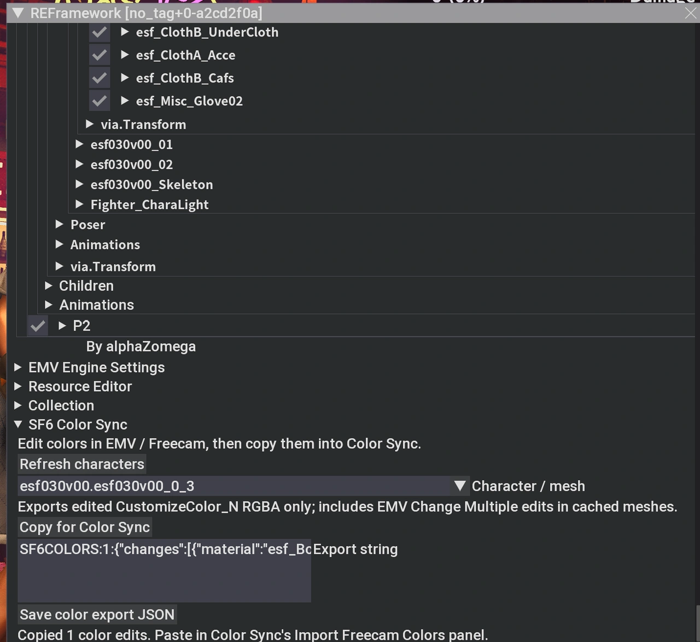

Bring your in-game colors into Color Sync
Edit colors live with EMV / Lua Freecam, then transfer the edited slots with one copy and paste.
Download the exporter on Nexus Mods
If EMV Engine and Lua Freecam are not set up yet, follow the EMV Engine and Lua Freecam setup video. Keep REFramework installed.
Once EMV and Freecam are ready
- Enable the exporter. Place its ZIP in Fluffy Mod Manager’s
Games/SF6/Modsfolder. Refresh the mod list, enable SF6 Color Sync - Freecam Exporter, then start SF6. - Edit and copy. Open the character’s Materials editor before editing colors in EMV / Freecam. Under REFramework’s Script Generated UI, open SF6 Color Sync, click Refresh characters, select your character, and click Copy for Color Sync.
- Paste and save. Load your target mod ZIP or CMD in Color Sync and choose the active color you want to update. In section 2, open Import Freecam Colors, paste, preview, and apply. Export your CMD or mod ZIP to save the edits.

Supported colors
The exporter includes edited CustomizeColor RGBA vectors and CMD hair colors: primary specular, secondary specular, occlusion, and rim light. This supports Ingrid’s hair, including Change Multiple edits in EMV’s cached meshes. Runtime RGB values convert automatically to visual CMD colors. Matching fields become active.
Choose any loaded CMD as your target. Import updates its matching material and color names. Unchanged colors and other shader settings are omitted. Missing or ambiguous matches appear in the preview.
BaseColor is not included. It belongs to the MDF rather than the CMD palette. In the browser’s material list, expand CMD hair shader colors to edit the supported fields. These affect materials whose shader uses the corresponding color.
Open each mesh’s Materials editor that you want to include, including separate hair/head meshes. Copy scans the selected character’s current cache, including meshes opened since the last refresh. When character grouping is unavailable, refresh after opening another mesh, then select and export each mesh separately. Open EMV before editing so it can capture the original colors.
Clipboard and undo
To share colors from a loaded CMD, use Export Colors as String in section 2 of Color Sync. Generate or copy the active CMD’s current colors, including applied edits, then paste into Import Freecam Colors for your chosen target. Inactive slots are omitted.
If copying fails, use Ctrl+A / Ctrl+C in the exporter’s text box, or save its JSON file and use Load Export JSON. The file is saved to reframework/data/SF6ColorSync/colors.sf6freecam.json.
Undo Last Import restores the pre-import CMD, including earlier edits and active states. Later CMD changes make that undo unavailable.